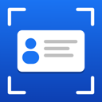

CardScanBusiness cards to contacts, in one snap.
For iPhone
CardScan reads a business card or an email signature and creates a contact for you: name, title, company, phone numbers, email, website and address. It can add the person's photo or the company logo when one is printed on the card.
Save where you want
Save new contacts to your iPhone's Contacts (iCloud), and to as many Google and Microsoft (Outlook / Microsoft 365) accounts as you like. You choose the accounts and can switch each one on or off at any time.
Private by design
Cards and screenshots are read on your iPhone. CardScan has no servers and no user accounts of its own, and the developer never receives your contacts or photos. Details are sent only to the accounts you choose. See the privacy policy.
Support
Questions, problems or a card that didn't read correctly? Email astevens1d@gmail.com. If a card read wrongly, a photo of it helps.
Common questions
How do I remove a Google or Microsoft account?
In CardScan, under Save To, press and hold the account and choose Sign Out. You can also remove CardScan's access in your Google account or Microsoft account settings.
Does CardScan keep copies of my cards?
No. The photo is read and then discarded. The text read from the card is stored in the new contact's notes, so you can check it later.